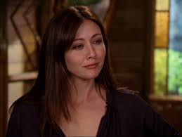

Prue Halliwell

Biographie
Prue Halliwell, interprétée par Shannen Doherty, est l'un des personnages principaux de la série "Charmed". Elle est la sœur aînée des Halliwell et possède des pouvoirs de télékinésie. Prue est connue pour son caractère fort et déterminé, ainsi que pour sa loyauté envers sa famille. Sa présence dans la série a eu un impact significatif, contribuant à la dynamique des personnages et à l'évolution de l'intrigue.